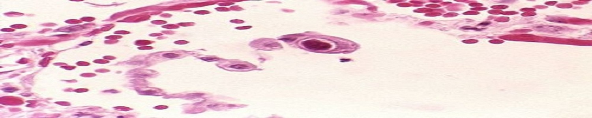

Cytomegalovirus (CMV) is a virus found around the world. It is related to the viruses that cause chickenpox and infectious mononucleosis (mono). Between 50 percent and 80 percent of adults in the United States have had a CMV infection by age 40. Once CMV is in a person's body, it stays there for life. CMV is spread through close contact with body fluids. Most people with CMV don't get sick and don't know that they've been infected. But infection with the virus can be serious in babies and people with weak immune systems. If a woman gets CMV when she is pregnant, she can pass it on to her baby. Usually the babies do not have health problems. But some babies can develop lifelong disabilities. A blood test can tell whether a person has ever been infected with CMV. Most people with CMV don't need treatment. If you have a weakened immune system, your doctor may prescribe antiviral medicine. Good hygiene, including proper hand washing, may help prevent infections.